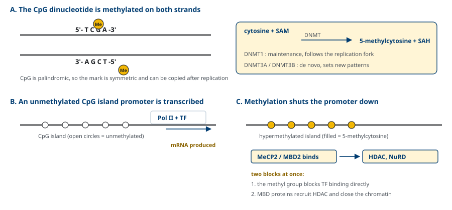
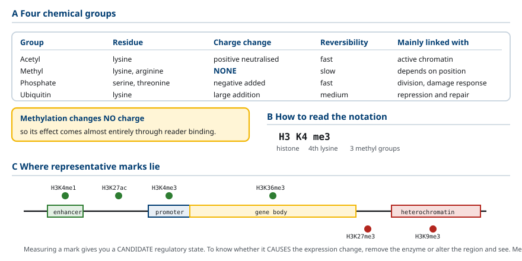
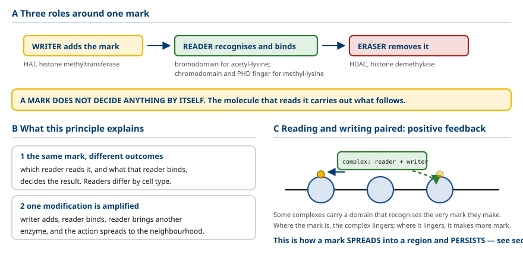
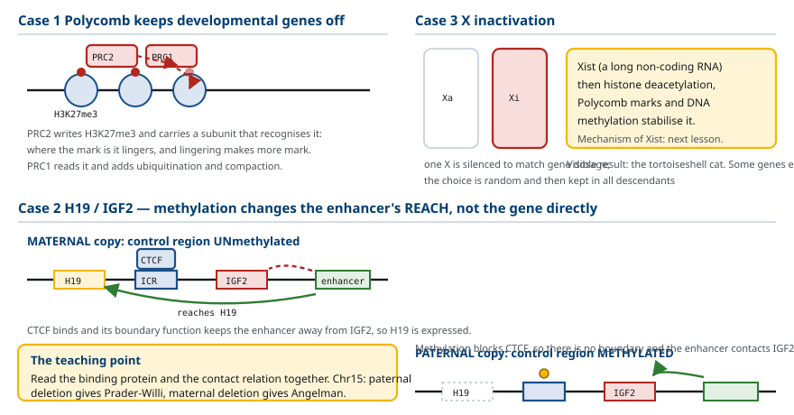
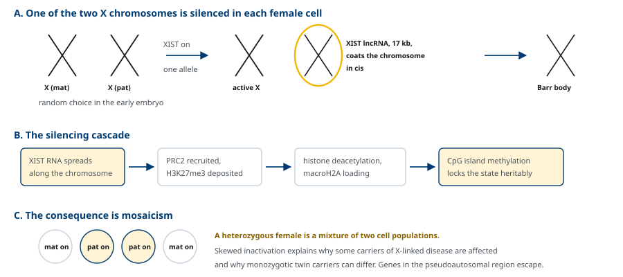
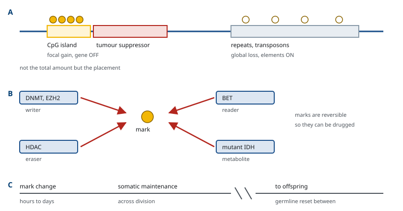

M03-W05-L01 · 분자유전학과 계통별 의학생화학특론
후성유전 조절 — DNA methylation과 histone 수식
Epigenetic Regulation: DNA Methylation and Histone Modification
학습목표
- 후성유전 조절의 정의를 적고 염기서열 변화에 의한 조절과 구분한다.
- CpG island의 성질과 DNA methyltransferase의 두 가지 작용(유지와 de novo)을 설명한다.
- DNA methylation이 전사를 억제하는 두 가지 기전을 구분해 설명한다.
- Histone 꼬리의 네 가지 수식과 writer·reader·eraser의 역할을 짝지어 설명한다.
- ATP 의존성 chromatin 재구성 복합체가 수식 효소와 하는 일이 어떻게 다른지 설명한다.
- Genomic imprinting의 기전으로 Prader-Willi 증후군과 Angelman 증후군의 차이를 설명한다.
- X 염색체 불활성화의 단계를 순서대로 적고 임상에서의 결과를 설명한다.
- 암에서의 과메틸화와 저메틸화를 구분하고 후성유전 표적 약물의 작용점을 지목한다.
선수지식
- M03-W04-L02 유전자 발현 조절의 원리와 조절 단위 — promoter, chromatin 수준의 조절
- M03-W04-L03 전사인자·enhancer와 조절 네트워크 — coactivator·corepressor, HAT과 HDAC
- M03-W01-L03 Chromatin과 nucleosome의 구조 — histone octamer와 histone 꼬리
- M02-W05-L02 1탄소 대사와 folate — S-adenosylmethionine(SAM)의 생성
강의 구성
- 1. 후성유전 조절의 정의와 의학적 의의
- 2. DNA methylation과 CpG island
- 3. Methylation이 전사를 끄는 두 가지 기전
- 4. Histone 꼬리의 수식 — 네 가지 화학기
- 5. Writer, reader, eraser와 chromatin 재구성 복합체
- 6. Genomic imprinting과 Prader-Willi·Angelman 증후군
- 7. X 염색체 불활성화
- 8. 암의 후성유전 이상과 표적 약물
1. 후성유전 조절의 정의와 의학적 의의
사람의 모든 체세포는 같은 유전체를 가진다. 간세포와 신경세포의 차이는 염기서열의 차이가 아니라 어느 유전자가 켜져 있는지의 차이다. 그리고 이 차이는 세포가 분열해도 유지된다. 후성유전 조절(epigenetic regulation)은 염기서열을 바꾸지 않으면서 유전자 발현 상태를 만들고, 그 상태를 세포 분열을 거쳐 전달하는 기전을 말한다.
앞 수업에서 다룬 전사인자에 의한 조절과는 성질이 다르다. 전사인자는 신호가 사라지면 함께 사라지고 조절도 멈춘다. 후성유전 표지는 DNA나 histone에 공유결합으로 붙어 있고 복제 때 복사되므로, 신호가 사라진 뒤에도 상태가 남는다.
표지의 종류는 네 가지로 묶인다.
- DNA methylation: cytosine의 5번 탄소에 methyl기가 붙는다.
- Histone 수식: histone 꼬리의 lysine, arginine, serine에 화학기가 붙는다.
- Chromatin 재구성: nucleosome의 위치와 구성이 바뀐다.
- Non-coding RNA: 다음 수업에서 다룬다.
의학에서 이 기전을 다루는 이유가 세 가지다. 첫째, 유전자 서열이 정상인데 발현만 틀려서 생기는 질환이 있다. imprinting 질환과 암의 상당 부분이 그렇다. 둘째, 표지는 가역적이므로 약물 표적이 된다. 결실된 유전자는 되돌릴 수 없으나 methylation으로 꺼진 유전자는 되돌릴 수 있다. 셋째, 진단 방법이 달라진다. 염기서열 분석으로는 보이지 않으므로 methylation을 직접 측정하는 검사가 필요하다.
2. DNA methylation과 CpG island
사람의 DNA methylation은 거의 전부 CpG 서열의 cytosine에 일어난다. CpG는 cytosine 다음에 guanine이 오는 디뉴클레오타이드를 뜻하고(p는 두 염기를 잇는 인산), 상보 가닥에서도 읽으면 CpG이므로 회문 구조다. 이 성질이 표지의 유전에 결정적이다. 복제 후 한 가닥만 메틸화된 상태(hemimethylated)에서 반대쪽에 같은 표지를 복사할 수 있다.
반응은 S-adenosylmethionine(SAM)이 methyl기를 주는 전달 반응이고, DNA methyltransferase(DNMT)가 촉매한다. 산물은 5-methylcytosine과 S-adenosylhomocysteine(SAH)이다. 1탄소 대사와 folate·vitamin B12 상태가 methylation 능력에 직접 영향을 준다는 연결이 여기서 나온다.

| 효소 | 역할 | 작용 기질 | 임상적 연관 |
|---|---|---|---|
| DNMT1 | 유지(maintenance) | hemimethylated CpG | 복제 후 표지 복사, 상염색체 우성 소뇌 ataxia |
| DNMT3A | de novo | 비메틸화 CpG | 급성 골수백혈병의 빈번한 변이, Tatton-Brown-Rahman 증후군 |
| DNMT3B | de novo | 비메틸화 CpG, 반복서열 | ICF 증후군(면역결핍·중심절 불안정·얼굴 이상) |
| DNMT3L | 촉매활성 없음, DNMT3A 보조 | — | 생식세포 imprinting 설정 |
사람 유전체 전체에서 CpG는 기대 빈도의 20~25%밖에 없다. 메틸화된 cytosine이 탈아미노화되면 thymine이 되고 이것은 수선되지 않은 채 남기 쉬우므로, 진화 과정에서 CpG가 소실된 결과다. 그런데 일부 구간에는 CpG가 밀집해 있다. 길이 약 200~2,000 염기쌍, GC 함량 50% 이상, CpG 관찰/기대 비 0.6 이상인 구간을 CpG island라 한다.
- 사람 유전자의 약 60~70%가 promoter에 CpG island를 가진다.
- 정상 체세포에서 대부분의 CpG island는 비메틸화 상태다. 유전자가 실제로 발현되지 않는 조직에서도 비메틸화로 남아 있는 경우가 많다.
- 반대로 island 밖의 CpG(유전자 몸통, 반복서열, 전이인자)는 대부분 메틸화되어 있다. 전이인자의 침묵과 유전체 안정성에 쓰인다.
따라서 임상에서 의미를 가지는 사건은 두 방향이다. 비메틸화 상태여야 하는 CpG island가 메틸화되는 것(과메틸화)과 메틸화 상태여야 하는 island 밖 영역이 탈메틸화되는 것(저메틸화)이다. 8절에서 암을 다룰 때 두 사건이 같은 종양에서 동시에 일어난다는 점을 본다.
3. Methylation이 전사를 끄는 두 가지 기전
Methyl기 하나는 작고 전하도 바뀌지 않는다. 그런데도 전사가 멈추는 이유는 기전이 두 갈래이기 때문이다.
(1) 직접 차단 Methyl기가 major groove 쪽으로 돌출해 전사인자가 인식 서열에 접근하지 못하게 한다. 결합 서열에 CpG를 포함하는 전사인자가 이 방식으로 차단된다. 예를 들어 CTCF와 Sp1 계열은 결합 부위의 methylation에 민감하다.
(2) Reader 단백질을 통한 간접 억제 이쪽이 더 광범위하다. Methyl-CpG binding domain(MBD)을 가진 단백질이 5-methylcytosine을 인식해 결합하고, 거기에 HDAC 복합체와 corepressor를 불러들인다. MeCP2, MBD1, MBD2, MBD3가 이 부류다. 결과적으로 histone deacetylation이 일어나고 chromatin이 조밀해진다.
Methylation을 되돌리는 경로도 있다. TET1~TET3는 α-ketoglutarate와 Fe²⁺를 쓰는 dioxygenase로 5-methylcytosine을 5-hydroxymethylcytosine으로 산화시키고, 이것이 염기 절단 수선을 통해 비메틸화 cytosine으로 돌아간다. 능동적 탈메틸화 경로다. 수동적 탈메틸화는 DNMT1이 작동하지 않는 상태에서 복제가 반복되어 표지가 희석되는 과정이고, 8절의 azacitidine이 이 경로를 쓴다.
4. Histone 꼬리의 수식 — 네 가지 화학기
Nucleosome의 histone octamer에서 각 histone의 N 말단 꼬리는 core 밖으로 돌출해 있다. 이 꼬리의 lysine과 arginine, serine이 수식의 대상이다. 표기는 H3K27ac처럼 histone 이름 + 잔기 + 번호 + 수식으로 한다.

(1) Acetylation Lysine의 ε-amino기에 acetyl기가 붙는다. Lysine의 양전하가 사라지므로 음전하를 띤 DNA와의 정전기적 결합이 약해진다. 방향이 일정하다. acetylation은 늘 전사를 쉽게 한다. H3K9ac와 H3K27ac는 활성 promoter와 enhancer의 표지로 쓰인다. 효소는 HAT(p300/CBP, GCN5)과 HDAC이다.
(2) Methylation Lysine에 methyl기가 1~3개, arginine에 1~2개 붙는다. 전하가 바뀌지 않으므로 chromatin을 직접 느슨하게 하거나 조밀하게 하지 않는다. 효과는 전적으로 어느 잔기에 붙었고 어느 reader가 그것을 읽는지에 달려 있다. 같은 methylation이 위치에 따라 활성 표지와 억제 표지로 갈린다.
| 표지 | 의미 | 주요 writer | 주요 reader |
|---|---|---|---|
| H3K4me3 | 활성 promoter | MLL/KMT2 계열 | TAF3, CHD1 |
| H3K36me3 | 전사 중인 유전자 몸통 | SETD2 | MRG15 |
| H3K27me3 | Polycomb에 의한 억제 | EZH2 (PRC2) | PRC1(CBX) |
| H3K9me3 | 구성적 heterochromatin | SUV39H1, SETDB1 | HP1 |
| H3K27ac | 활성 enhancer | p300/CBP | BRD4 |
(3) Phosphorylation Serine과 threonine에 인산이 붙어 음전하가 추가된다. H3S10ph는 세포 분열기의 염색체 응축과, immediate-early 유전자의 급속한 유도에 함께 쓰인다. Aurora B kinase와 MSK1이 효소다.
(4) Ubiquitination 76개 아미노산의 ubiquitin이 lysine에 결합한다. 단백질 분해 신호인 polyubiquitination과 달리 여기서는 mono-ubiquitination이고 분해를 뜻하지 않는다. H2BK120ub는 전사 신장을 돕고, H2AK119ub는 PRC1이 붙여 억제에 쓰인다.
5. Writer, reader, eraser와 chromatin 재구성 복합체
수식을 다루는 단백질은 기능에 따라 세 부류로 나뉜다. 이 분류가 약물 표적의 분류와 그대로 일치한다.
- Writer: 표지를 붙인다. HAT, histone methyltransferase(HMT), kinase, ubiquitin ligase, DNMT.
- Reader: 표지를 인식해 결합한다. acetyl-lysine은 bromodomain(BRD4), methyl-lysine은 chromodomain(HP1)과 Tudor·PWWP 도메인, 5-methylcytosine은 MBD가 읽는다.
- Eraser: 표지를 뗀다. HDAC(class I, II, IV)과 NAD⁺ 의존성 sirtuin(class III), histone demethylase(LSD1, KDM 계열), TET.

표지는 모두 가역적이므로 어떤 자리의 상태는 writer와 eraser의 균형이 정하는 정상 상태다. 이 점이 치료 가능성의 근거다. 균형을 한쪽으로 밀면 상태가 옮겨간다.
Chromatin 재구성 복합체(chromatin remodelling complex)는 위 세 부류와 역할이 다르다. 화학기를 붙이거나 떼지 않고, ATP를 소비해 nucleosome을 밀거나 떼어내거나 histone을 교체한다. 네 계열이 있다.
| 계열 | 대표 복합체 | 주된 작용 | 질환 연관 |
|---|---|---|---|
| SWI/SNF | BAF, PBAF | nucleosome 제거, 접근성 생성 | SMARCB1 결실(rhabdoid tumour), ARID1A 변이, Coffin-Siris 증후군 |
| ISWI | ACF, CHRAC | nucleosome 간격 정렬 | — |
| CHD | NuRD(CHD3/4) | HDAC와 함께 억제 | CHARGE 증후군(CHD7) |
| INO80 | INO80, SWR1 | H2A.Z 교체, 수선 | — |
SWI/SNF 계열 소단위의 변이는 사람 암 전체의 약 20%에서 발견된다. 종양 억제 유전자가 아니라 chromatin 접근성을 만드는 기계의 결함이 발암에 기여한다는 사실이 이 수치의 의미다.
6. Genomic imprinting과 Prader-Willi·Angelman 증후군
사람 유전자의 대부분은 부계·모계 대립유전자가 함께 발현된다. 그런데 100~200개 정도의 유전자는 부모 중 한쪽에서 온 대립유전자만 발현된다. 이 현상을 genomic imprinting이라 한다.
기전의 중심에 imprinting control region(ICR, 또는 imprinting centre)이 있다. 생식세포 형성 과정에서 기존 methylation이 지워진 뒤 부계와 모계에 서로 다른 methylation 양상이 새로 설정되고(DNMT3A·DNMT3L), 이 차이가 수정 후 체세포 분열을 거쳐 유지된다. 결과적으로 한쪽 대립유전자는 발현되고 다른 쪽은 침묵한다.

임상적 귀결이 명확하다. imprinting된 유전자좌에는 기능적 예비 사본이 없다. 발현되는 쪽 대립유전자가 사라지면 다른 쪽이 남아 있어도 보상되지 않는다.
15q11-q13이 대표적인 유전자좌다. 이 구간에서 *SNRPN*과 SNORD116 군집은 부계 대립유전자에서만, *UBE3A*는 (뇌에서) 모계 대립유전자에서만 발현된다.
- Prader-Willi syndrome(출생 1만~3만 명당 1명): 부계 기여가 없을 때 생긴다. 부계 15q11-q13 결실 65~75%, 모계 uniparental disomy 20~30%, imprinting 결함 1~3%. 신생아기 근긴장 저하와 수유 곤란으로 시작해 유아기 이후 과식과 비만, 저신장, 성선 기능저하, 지적 장애를 보인다.
- Angelman syndrome(비슷한 빈도): 모계 기여가 없을 때 생긴다. 모계 결실 70~75%, UBE3A 변이 약 10%, 부계 uniparental disomy 3~7%, imprinting 결함 약 3%. 심한 언어 장애, ataxia 보행, 경련, 미세두증, 잦은 웃음이 특징이다.
같은 논리의 다른 예가 Beckwith-Wiedemann syndrome(11p15, IGF2·H19·CDKN1C)과 Silver-Russell syndrome이다. 11p15 ICR1의 과메틸화는 *IGF2*의 발현을 늘려 과성장을 만들고, 저메틸화는 성장 저하를 만든다. 같은 유전자좌의 반대 방향 methylation 변화가 반대 방향 표현형을 만든다.
7. X 염색체 불활성화
여성은 X 염색체를 두 개 가지고 남성은 하나를 가진다. X 연관 유전자의 발현량을 맞추기 위해 여성의 각 세포에서 두 X 중 하나가 거의 전부 침묵한다. 이 과정이 X 염색체 불활성화(X chromosome inactivation, XCI)다.

과정은 다음 순서로 일어난다.
1. 선택 초기 배아(사람에서 수정 후 약 1주 무렵)에서 각 세포가 두 X 중 하나를 무작위로 고른다. 2. XIST 발현 선택된 X의 X-inactivation centre에서 약 17 kb의 long non-coding RNA인 XIST가 전사된다. XIST RNA는 자신이 전사된 염색체에만(in cis) 퍼져 염색체를 덮는다. 3. 억제 표지의 부가 XIST가 PRC2를 불러들여 H3K27me3를 깔고, HDAC가 acetyl기를 제거하며, macroH2A가 nucleosome에 끼워진다. 4. 고정 CpG island가 메틸화되어 상태가 복제를 거쳐 유전된다. 이 단계 이후에는 XIST가 없어도 침묵이 유지된다. 5. Barr body 불활성 X는 간기 핵에서 조밀한 덩어리로 보인다.
X의 모든 유전자가 꺼지는 것은 아니다. pseudoautosomal region과 일부 유전자(약 15%)는 불활성화를 벗어난다(escape). 이 유전자들은 여성에서 두 배로 발현되고, Turner 증후군(45,X)의 표현형이 여기에서 나온다.
8. 암의 후성유전 이상과 표적 약물
종양 유전체에서는 국소적 과메틸화와 전반적 저메틸화가 함께 관찰된다. 두 사건의 표적과 결과가 다르다.

(1) CpG island 과메틸화 — 종양 억제 유전자의 침묵 변이 없이 유전자가 꺼지므로 Knudson의 두 번째 타격으로 작동한다. CDKN2A(p16), MLH1, BRCA1, VHL, *MGMT*의 promoter 과메틸화가 여러 종양에서 보고된다.
(2) 전반적 저메틸화 — 유전체 불안정과 imprinting 상실 반복서열과 전이인자의 methylation이 줄어 염색체 불안정이 생기고, imprinting이 깨져 *IGF2*가 양쪽 대립유전자에서 발현된다(Wilms tumour).
(3) 후성유전 효소 자체의 변이 *DNMT3A*는 급성 골수백혈병에서, *TET2*는 골수형성이상 증후군에서, *EZH2*는 림프종에서, *SMARCB1*과 *ARID1A*는 여러 고형암에서 변이가 발견된다. 또 IDH1·IDH2 변이는 2-hydroxyglutarate를 축적시켜 α-ketoglutarate 의존성 TET과 KDM을 경쟁적으로 억제하므로, 대사 변이가 후성유전 이상을 만든다.
약물은 writer와 eraser를 표적으로 한다.
| 약물 | 표적 | 작용 기전 | 적응증 |
|---|---|---|---|
| Azacitidine, decitabine | DNMT1 | DNA에 끼어든 cytidine 유사체가 DNMT1을 공유결합으로 붙잡아 소모시켜 복제마다 methylation이 희석된다 | 골수형성이상 증후군, 급성 골수백혈병 |
| Vorinostat, romidepsin, belinostat | HDAC(class I/II) | acetyl기 제거를 막아 chromatin을 연다 | 말초·피부 T세포 림프종 |
| Panobinostat | HDAC | 같음 | 다발성 골수종(병용) |
| Tazemetostat | EZH2 | H3K27 methyltransferase 억제로 Polycomb 억제를 해제한다 | epithelioid sarcoma, 추적성 림프종 |
| Ivosidenib, enasidenib | 변이 IDH1/IDH2 | 2-hydroxyglutarate 생성을 줄여 TET·KDM 기능을 회복시킨다 | 급성 골수백혈병 |
Azacitidine의 기전에는 중요한 단서가 있다. 탈메틸화가 복제 의존적이므로 효과가 즉시 나타나지 않는다. 임상에서 반응 평가에 4~6주기(약 4~6개월)를 기다리는 근거가 여기에 있다. 세포독성 항암제처럼 수일 내 효과를 기대하고 조기에 중단하면 반응을 놓친다.
확인 문항
어떤 환자의 종양에서 *CDKN2A*의 단백질이 전혀 발현되지 않았으나 유전자의 전체 염기서열은 정상이었다. 가능한 기전과 그것을 확인할 검사를 적으라.
해설
CDKN2A promoter의 CpG island 과메틸화를 의심한다. 과메틸화되면 methyl기가 전사인자 결합을 직접 막고, MBD 단백질이 결합해 HDAC를 불러들여 chromatin이 조밀해지므로 염기서열이 정상인 상태로 전사가 꺼진다. 종양 억제 유전자의 두 번째 타격이 변이가 아니라 methylation으로 일어난 경우다. 확인에는 염기서열 분석이 아니라 methylation을 직접 보는 검사가 필요하다. Bisulfite 처리 후 염기서열 분석, methylation 특이 PCR, methylation microarray가 쓰인다. Bisulfite는 비메틸화 cytosine만 uracil로 바꾸므로 메틸화 여부가 서열 차이로 읽힌다.
Histone acetylation은 전사를 늘리는 방향으로만 작용하는데 histone methylation은 자리에 따라 활성 표지도 되고 억제 표지도 된다. 이 차이를 화학적 근거로 설명하라.
해설
Acetylation은 lysine의 ε-amino기의 양전하를 중화한다. Histone의 양전하와 DNA 인산 골격의 음전하 사이의 정전기적 결합이 약해지므로, 어느 자리에 붙든 chromatin이 느슨해지는 방향으로 물리적 효과가 나타난다. Methylation은 전하를 바꾸지 않고 부피만 조금 늘리므로 그 자체로는 결합력을 바꾸지 않는다. 효과는 그 표지를 읽는 reader가 무엇을 데려오는지로 결정된다. H3K4me3는 활성 전사 기구의 구성 요소가 읽고, H3K9me3는 HP1이 읽어 heterochromatin을 만들며, H3K27me3는 PRC1이 읽어 억제한다. 즉 acetylation은 물리화학적 기전, methylation은 정보 전달 기전으로 작동한다.
Prader-Willi 증후군이 의심되는 신생아에서 염기서열 분석을 1차 검사로 선택하면 대부분의 환자를 진단하지 못한다. 왜 그런지, 그리고 어떤 검사를 해야 하는지 설명하라.
해설
Prader-Willi 증후군의 원인은 부계 15q11-q13 결실(65~75%), 모계 uniparental disomy(20~30%), imprinting 결함(1~3%)이다. 세 가지 모두 유전자의 염기서열을 바꾸지 않는다. 결실은 서열이 없어진 것이므로 남은 모계 사본을 읽으면 정상으로 보이고, uniparental disomy에서는 모계 사본이 두 개 있을 뿐 서열은 정상이며, imprinting 결함은 표지만 틀리다. 공통점은 모두 부계형 methylation 표지가 없다는 점이므로, 1차 검사는 imprinting centre의 methylation 분석이다. 이 검사로 세 원인을 모두 검출하고, 양성이면 MLPA나 microarray로 결실을 확인하고 결실이 없으면 부모 시료로 uniparental disomy를 확인한다. 재발 위험이 원인에 따라 1% 미만에서 50%까지 달라지므로 이 구분이 상담에 필요하다.
X 연관 열성 질환의 보인자인 여성 두 명 중 한 명은 완전히 무증상이고 다른 한 명은 경한 증상을 보였다. 두 사람 모두 같은 변이를 가지고 있었다. 설명하라.
해설
여성의 각 세포는 두 X 중 하나를 무작위로 침묵시키므로, 보인자 여성은 정상 대립유전자를 발현하는 세포와 변이 대립유전자를 발현하는 세포가 섞인 mosaic이다. 침묵의 선택이 무작위이므로 그 비율은 사람마다 다르다. 두 집단의 비율이 대략 반반이면 정상 세포의 산물로 보상되어 무증상이고, 우연히 정상 대립유전자를 가진 X가 많이 침묵하면(skewed inactivation) 기능하는 세포가 부족해 증상이 나타난다. 조직마다 치우침이 다를 수 있어 장기별 침범도 불균일하다. 같은 변이로 표현형이 다른 이유가 변이 자체가 아니라 불활성화 양상에 있다는 점이 요지다.
Azacitidine을 투여한 골수형성이상 증후군 환자에서 2주 후 혈액 수치의 변화가 없었다. 투여를 중단할 근거가 되는가. 기전으로 답하라.
해설
근거가 되지 않는다. Azacitidine은 cytidine 유사체로 DNA에 끼어들어 DNMT1을 공유결합으로 붙잡아 소모시킨다. Methylation이 능동적으로 제거되는 것이 아니라, DNMT1이 없는 상태에서 복제가 반복될 때마다 새로 합성된 가닥에 표지가 복사되지 않아 희석된다. 따라서 탈메틸화는 세포 분열에 의존하고, 침묵했던 유전자가 다시 발현되고 조혈이 회복되기까지 여러 주기가 필요하다. 임상에서 반응 평가에 4~6주기를 권하는 근거가 이것이다. 세포독성 항암제의 시간 척도를 적용해 조기에 중단하면 반응을 놓친다.
MGMT promoter의 methylation 상태가 교모세포종의 temozolomide 치료 결정에 쓰이는 이유를 설명하라.
해설
Temozolomide는 DNA의 guanine O6 위치를 alkyl화해 세포를 죽인다. MGMT는 이 alkyl기를 직접 제거해 손상을 수선하는 효소이므로, MGMT가 많으면 약물의 손상이 지워져 효과가 떨어진다. MGMT promoter의 CpG island가 과메틸화되면 MGMT 발현이 줄어 손상이 남고 약물 효과가 커진다. 따라서 methylation이 있는 종양이 temozolomide에 더 잘 반응하고 생존이 길다. 유전자의 서열이 아니라 methylation 상태가 약물 반응을 예측하는 표지가 되는 예이며, 이 정보를 얻으려면 염기서열 검사가 아니라 methylation 검사를 해야 한다.
IDH1 변이가 왜 "대사 효소의 변이인데 후성유전 이상을 만드는가"를 설명하라.
해설
정상 IDH1·IDH2는 isocitrate를 α-ketoglutarate로 전환한다. 변이 효소는 새로운 활성을 얻어 α-ketoglutarate를 2-hydroxyglutarate로 환원시키고, 이 대사물이 세포 내에 크게 축적된다. TET 계열 DNA demethylase와 KDM 계열 histone demethylase는 모두 α-ketoglutarate를 보조 기질로 쓰는 dioxygenase이고, 2-hydroxyglutarate는 구조가 유사해 이 효소들을 경쟁적으로 억제한다. 결과적으로 DNA와 histone의 methylation 제거가 막혀 과메틸화 양상이 생기고 분화 유전자가 침묵한다. 대사와 후성유전이 보조 기질을 통해 연결되어 있다는 점이 요지이고, ivosidenib과 enasidenib이 변이 효소를 억제해 이 연결을 끊는다.
후성유전 표지로 꺼진 유전자가 변이로 망가진 유전자보다 치료 가능성이 높은 이유를 적으라.
해설
후성유전 표지는 효소가 붙이고 다른 효소가 떼어내는 가역적 공유결합이며, 그 아래의 염기서열은 그대로 남아 있다. 따라서 writer를 억제하거나 eraser를 활성화해 균형을 옮기면 침묵했던 유전자가 원래 서열 그대로 다시 전사될 수 있다. 결실이나 frameshift 변이는 정보 자체가 사라졌으므로 서열을 되돌려 넣지 않는 한 발현을 회복할 수 없다. Azacitidine이 DNMT1을 소모시켜 과메틸화된 종양 억제 유전자를 재발현시키고 HDAC 억제제가 acetylation을 쌓아 chromatin을 여는 것이 이 차이를 이용한 치료다. 다만 작용이 특정 유전자에 국한되지 않아 의도하지 않은 유전자도 함께 켜지므로 선택성이 이 부류 약물의 한계다.
참고문헌
- Ferrier DR (ed). Lippincott Illustrated Reviews: Biochemistry. Chapter 33, Regulation of Gene Expression.
- Jones PA. Functions of DNA methylation: islands, start sites, gene bodies and beyond. Nat Rev Genet 2012;13:484–492.
- Allis CD, Jenuwein T. The molecular hallmarks of epigenetic control. Nat Rev Genet 2016;17:487–500.
- Bannister AJ, Kouzarides T. Regulation of chromatin by histone modifications. Cell Res 2011;21:381–395.
- Baylin SB, Jones PA. Epigenetic determinants of cancer. Cold Spring Harb Perspect Biol 2016;8:a019505.
- Buiting K, Williams C, Horsthemke B. Angelman syndrome — insights into a rare neurogenetic disorder. Nat Rev Neurol 2016;12:584–593.
- Lyon MF. Gene action in the X-chromosome of the mouse. Nature 1961;190:372–373.
- Hegi ME et al. MGMT gene silencing and benefit from temozolomide in glioblastoma. N Engl J Med 2005;352:997–1003.
- Figueroa ME et al. Leukemic IDH1 and IDH2 mutations result in a hypermethylation phenotype. Cancer Cell 2010;18:553–567.